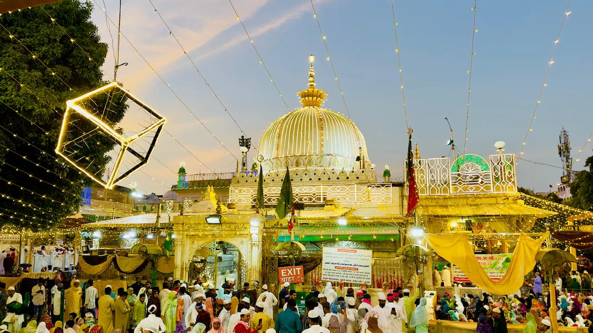
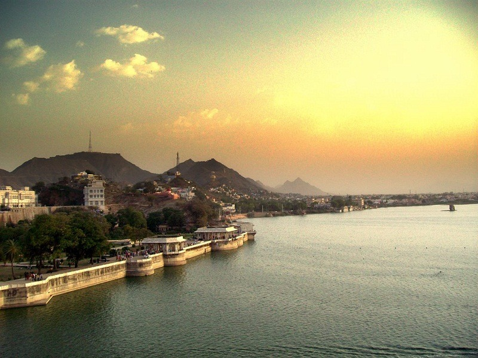
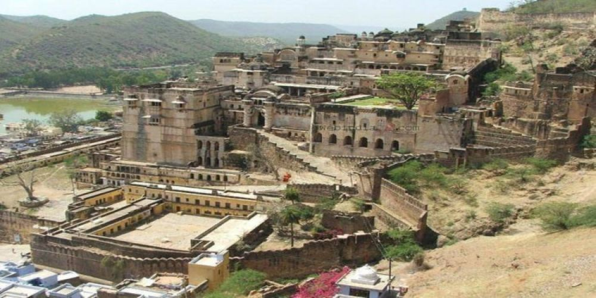
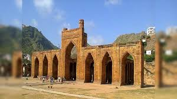
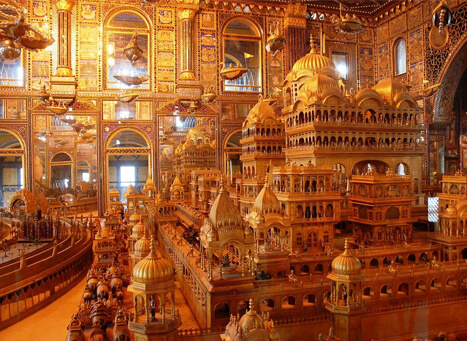
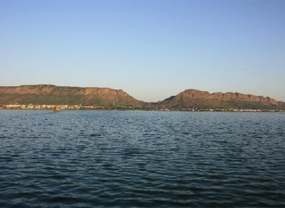
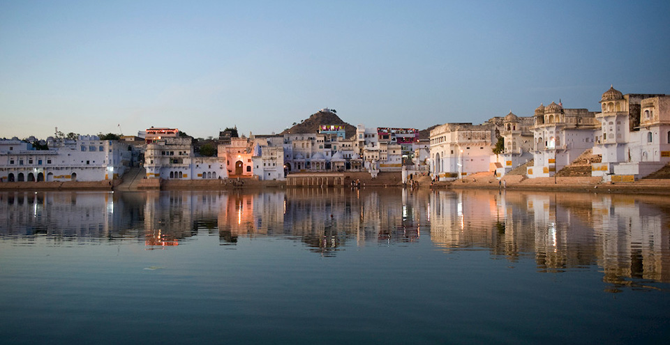

Ajmer Sharif Dargah: The Sacred Shrine
Ajmer Sharif Dargah is a revered Sufi shrine dedicated to the saint Khwaja Moinuddin Chishti.
Fun Fact:
~It attracts millions of devotees from all over the world, regardless of their religion!
Things to Explore at Ajmer Sharif Dargah:
-
The Main Shrine:
Visit the main shrine where the saint is buried, adorned with beautiful marble and gold decorations.
-
The Courtyard:
Stroll through the spacious courtyard filled with devotees and spiritual ambiance.
-
The Langar:
Experience the community kitchen serving free meals to all visitors.
-
The Qawwali Performances:
Enjoy soulful qawwali performances that resonate with devotion and spirituality.
-
The Surrounding Markets:
Explore the vibrant markets selling religious artifacts, clothes, and souvenirs.
Why Visit Ajmer Sharif Dargah?
!Because it’s a place of peace, spirituality, and cultural harmony that transcends boundaries!

Ana Sagar Lake: The Serene Oasis
Ana Sagar Lake is a picturesque artificial lake surrounded by lush gardens and historical monuments.
Fun Fact:
~It was built in the 12th century by King Anaji Chauhan!
Things to Explore at Ana Sagar Lake:
-
The Gardens:
Relax in the beautiful gardens that line the lake, perfect for picnics and leisurely walks.
-
The Marble Baradari:
Visit the stunning marble pavilion built by Emperor Shah Jahan, offering panoramic views of the lake.
-
Boating:
Enjoy a peaceful boat ride on the serene waters of the lake.
-
Sunset Views:
Witness breathtaking sunsets that reflect on the tranquil waters.
-
Nearby Attractions:
Explore nearby attractions like Ajmer Fort and Daulat Bagh.
Why Visit Ana Sagar Lake?
!Because it’s a perfect escape from the hustle and bustle, offering tranquility and natural beauty!

Taragarh Fort: The Majestic Fortress
Taragarh Fort, also known as the Star Fort, is a historic fort perched on a hilltop overlooking Ajmer.
Fun Fact:
~It was built in the 14th century and is one of the earliest hill forts in Rajasthan!
Things to Explore at Taragarh Fort:
-
The Ruins:
Explore the ancient ruins, including massive walls, gates, and watchtowers.
-
The Water Reservoirs:
Discover the ingenious water storage system that supplied water to the fort.
-
The Panoramic Views:
Enjoy breathtaking views of Ajmer city and Ana Sagar Lake from the fort’s ramparts.
-
The Historical Significance:
Learn about the fort’s rich history and its role in various battles.
-
The Trek:
Embark on a trek to reach the fort, enjoying the scenic beauty along the way.
Why Visit Taragarh Fort?
!Because it’s a journey back in time, offering a glimpse into Rajasthan’s glorious past and stunning vistas!

Adhai Din Ka Jhonpra: The Architectural Marvel
Adhai Din Ka Jhonpra is a historical mosque known for its stunning Indo-Islamic architecture.
Fun Fact:
~It was built in just two and a half days, hence the name!
Things to Explore at Adhai Din Ka Jhonpra:
-
The Intricate Carvings:
Admire the exquisite stone carvings and inscriptions that adorn the walls.
-
The Pillars:
Marvel at the 124 intricately carved pillars that support the structure.
-
The Courtyard:
Explore the spacious courtyard that adds to the mosque’s grandeur.
-
The Historical Significance:
Learn about its history as a former Hindu temple converted into a mosque.
-
The Peaceful Ambiance:
Experience the serene atmosphere that makes it a perfect spot for reflection.
Why Visit Adhai Din Ka Jhonpra?
!Because it’s a masterpiece of architecture that tells tales of cultural fusion and historical significance!

Nasiyan Jain Temple: The Golden Temple
Nasiyan Jain Temple, also known as the Golden Temple, is a stunning Jain temple adorned with gold leaf and intricate carvings.
Fun Fact:
~It features a magnificent hall with a golden ceiling and intricate wooden carvings!
Things to Explore at Nasiyan Jain Temple:
-
The Main Hall:
Marvel at the golden ceiling and the intricately carved wooden pillars.
-
The Idol of Lord Rishabhdev:
Admire the beautifully crafted idol of Lord Rishabhdev, the first Tirthankara.
-
The Museum:
Explore the museum showcasing Jain artifacts and historical exhibits.
-
The Peaceful Ambiance:
Experience the serene atmosphere perfect for meditation and reflection.
-
The Architectural Beauty:
Appreciate the blend of traditional and modern architectural styles.
Why Visit Nasiyan Jain Temple?
!Because it’s a visual delight that reflects the opulence of Jain architecture and spirituality!

Foy Sagar Lake:
Foy Sagar Lake is an artificial lake built in the 1890s to provide water to Ajmer and is surrounded by scenic beauty.
Fun Fact:
~It was named after Sir Foy, the then Lieutenant Governor of Rajasthan!
Things to Explore at Foy Sagar Lake:
-
The Scenic Views:
Enjoy panoramic views of the lake against the backdrop of the Aravalli hills.
-
The Boating Experience:
Take a boat ride to soak in the tranquility and natural beauty.
-
The Walking Path:
Stroll along the walking path that encircles the lake, perfect for morning walks.
-
The Sunset Views:
Witness stunning sunsets that paint the sky with vibrant colors.
-
The Nearby Gardens:
Relax in the nearby gardens that add to the lake’s charm.
Why Visit Foy Sagar Lake?
!Because it’s a serene escape that offers a perfect blend of nature and tranquility!

Pushkar: The Holy Town
Pushkar, located near Ajmer, is a sacred town known for its holy lake and the famous Brahma Temple.
Fun Fact:
~It’s one of the few places in the world dedicated to Lord Brahma!
Things to Explore at Pushkar:
-
The Pushkar Lake:
Take a dip in the holy waters of Pushkar Lake, believed to cleanse sins.
-
The Brahma Temple:
Visit the ancient temple dedicated to Lord Brahma, adorned with intricate carvings.
-
The Ghats:
Explore the ghats surrounding the lake, where pilgrims perform rituals.
-
The Camel Fair:
Experience the vibrant Pushkar Camel Fair held annually in November.
-
The Local Markets:
Shop for handicrafts, jewelry, and traditional Rajasthani attire in the bustling markets.
Why Visit Pushkar?
!Because it’s a spiritual haven that offers a unique blend of culture, tradition, and natural beauty!